Diseño experiencias digitales centradas en la usabilidad y en las personas. Vengo del diseño gráfico y las artes visuales, y hoy trabajo entre UX/UI e implementación: transformo necesidades de usuarios y negocio en soluciones claras, funcionales y viables.
Design Thinking, benchmarking, análisis competitivo, evaluación heurística y prototipado en Figma.
Cada tienda de esta calle es un proyecto real. No siempre hubo métricas ni tiempo para entrevistar usuarios, así que adapté el proceso con análisis competitivo, benchmarking y evaluaciones heurísticas según el contexto de cada marca.
Plataformas con las que trabajo
Tocá una vidriera para entrar al caso
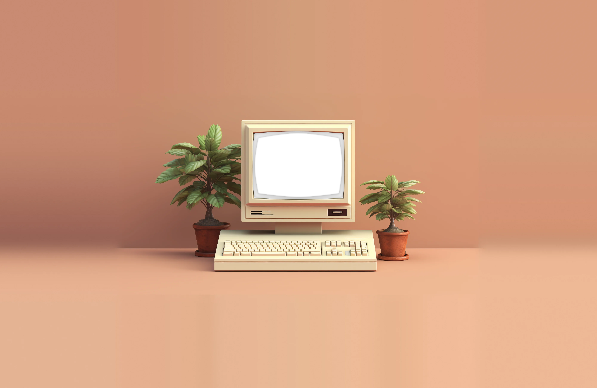
GeorginaFerrante
Product Designer y UX Engineer. Diseño productos digitales conectando investigación, interfaz e implementación.
Llevé la metodología que usan Google y Apple para conocer a sus usuarios a una pregunta cotidiana: qué regalarle a alguien. Es Design Thinking aplicado a la vida real, para no volver a regalar algo al azar.
Fue un examen final de e-commerce: inventar un producto innovador y tecnológico, y presentarlo en un prototipo de alta fidelidad que mostrara cómo se vendería en un e-commerce.
La idea y la función
Nació de Alexa y de la necesidad de proyectar imágenes. ¿Por qué no tener todo en uno?
SuperGadget hace lo que hace un asistente de voz, con inteligencia artificial, y además proyecta imágenes sobre cualquier superficie plana.
Cómo elegí a los competidores
Ser tecnológicos
Pertenecer al rubro robótica
Tener un producto de estilo minimalista
Tener un producto único
Tener un precio poco accesible
Qué detecté a nivel UI
El benchmarking guió la presentación web y la comercialización. Los competidores repetían:
Efectos parallax
Minimalismo
Letras muy grandes junto a letras muy chicas
Imágenes enormes y de alta calidad
Líneas finas
CTA claros
Fondos negros
Íconos con identidad
Cada sector usa toda la pantalla
Landing de lanzamiento
El resultado: una landing de alta fidelidad con la lógica de los grandes lanzamientos tecnológicos, oferta especial incluida.
La pieza únicaConcurso Fernet Branca 2021. Ilustración vectorial en Corel Draw.Mapa ilustrado de los mundos DisneyInvestigación de flora, fauna y ecosistemas de cada región. Recortes y vectorización en Corel Draw.
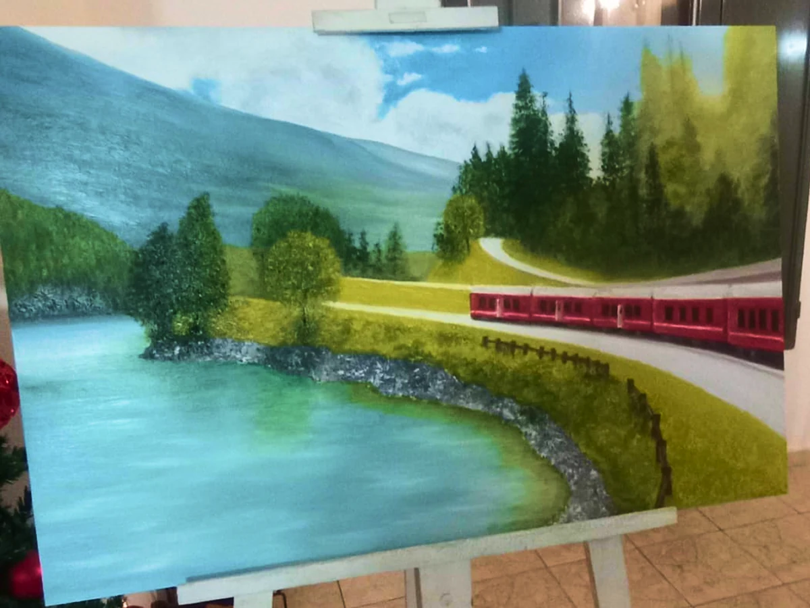
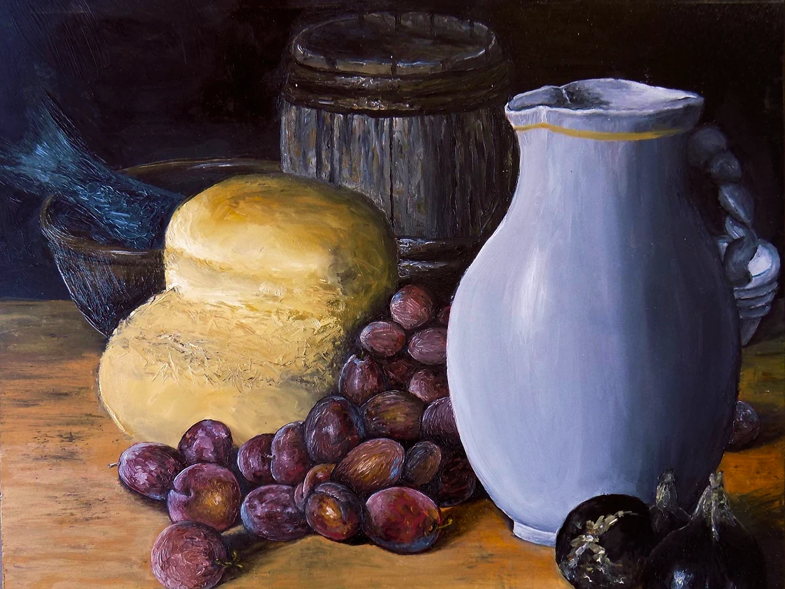
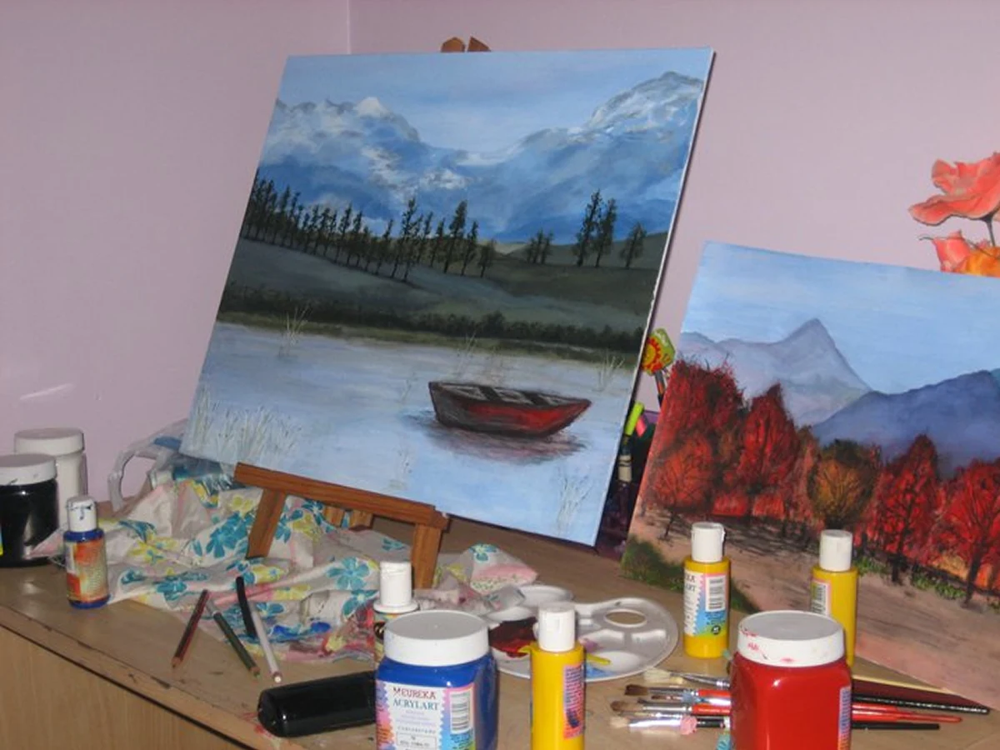
PinturaTres años en la Facultad de Artes Visuales me dejaron una sensibilidad por el color y cómo impacta en lo emocional.
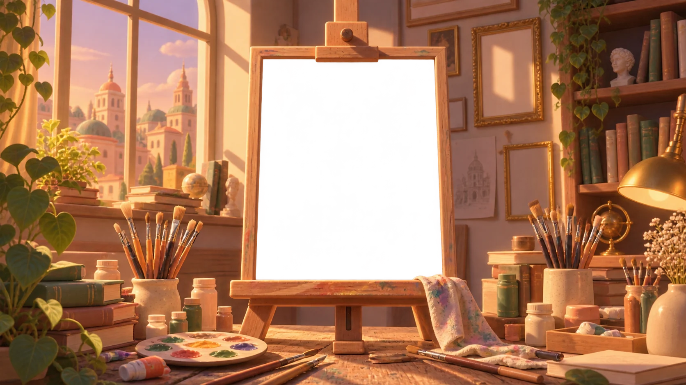
El taller
Más de seis años en diseño gráfico y tres en Artes Visuales construyeron mi base visual. UX sumó otra capa: entender el problema antes de diseñar.
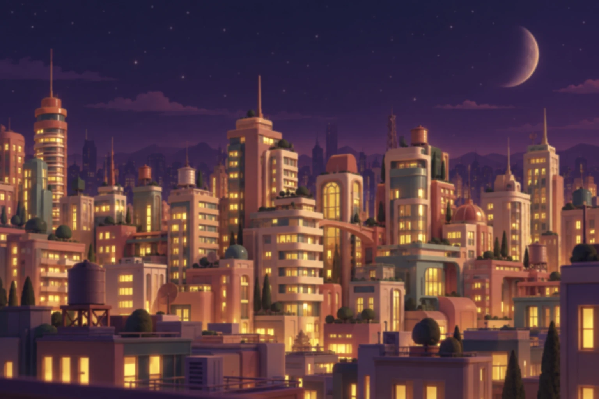
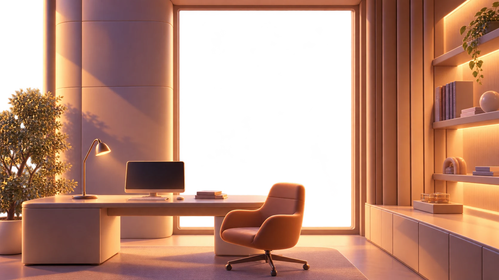
SEO aplicado a producto
Una competencia complementaria
La experiencia también empieza antes de entrar al sitio. Creé SEO Express para diagnosticar tiendas online y medir el impacto de los cambios con Search Console.
3plataformas: Tiendanube, Shopify y PrestaShop
Auditoría y diagnóstico de toda la cartera de clientes
Palabras clave según región y tipo de cliente, mayorista o minorista
Arquitectura de categorías y metadatos
Seguimiento antes y después con Google Search Console
Seguí bajando, falta el final
Resultados en Google
8 tiendas medidas día a día, de junio a agosto de 2026
88 %
de las tiendas intervenidas aumentó sus impresiones en Google
+44 %
de suba promedio entre las que crecieron
4 de 8
tiendas mejoraron su CTR
+131 %
el mayor crecimiento de una tienda
Las 7 tiendas que crecieron: impresiones, primera vs. última semana
Tienda 1+131 %
Tienda 2+47 %
Tienda 3+41 %
Tienda 4+39 %
Tienda 5+33 %
Tienda 6+12 %
Tienda 7+8 %
Resultados variables según el estado inicial, el alcance de la intervención y las características de cada proyecto. En el caso sin mejora se identificaron limitaciones fuera del alcance del trabajo, como categorías sin productos cargados. Los nombres de las tiendas se omiten por confidencialidad.
gracias.txt
> fin del recorrido_
¡Gracias por pasar!
Gracias por llegar hasta acá
Espero que hayas disfrutado el recorrido tanto como yo disfruté armarlo.
Un e-commerce de vinos necesitaba pasar de visitas a ventas en el lanzamiento de un producto nuevo, con las fiestas encima y poco tiempo.
El verdadero valor del producto
Chandon es una marca premium e instalada en Argentina. El valor declarado estaba en su fórmula, pero el valor real estaba en el envase: tonos pastel, celeste y rosado. El objetivo del usuario era claro: quedar bien en las fiestas llevando algo lindo.
Probé el producto sobre fondo blanco y se percibía como uno más. Elegí fondos que acompañaran sus colores.
El dilema del CTA
La primera opción tenía un CTA celeste que acompañaba el atractivo del envase. La segunda buscaba más contraste entre botón y fondo. Como diseñadora gráfica me convencía la primera; como diseñadora UX, la segunda debería resaltar más.
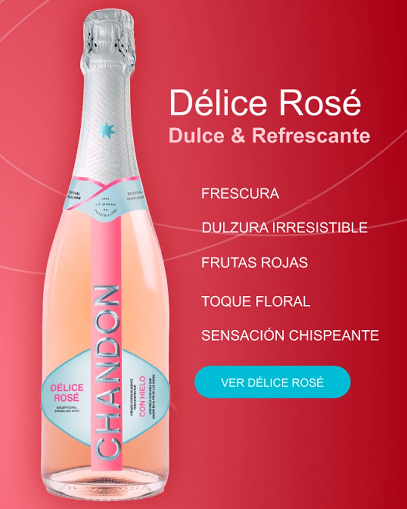
Opción A: CTA celeste.
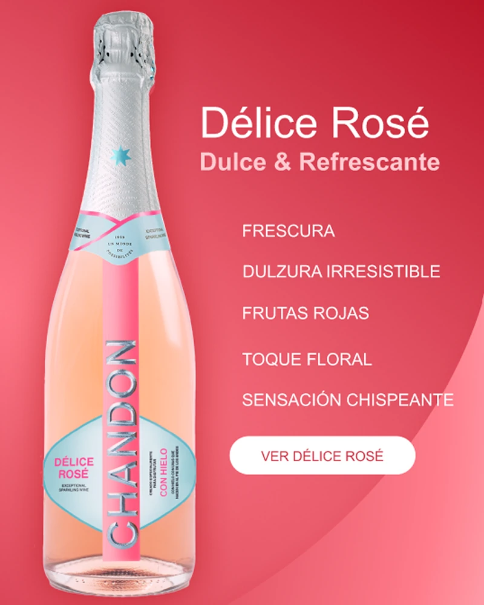
Opción B: CTA de mayor contraste.
Pruebas internas
Sin recursos para testear con usuarios reales ni tiempo para un A/B, hice pruebas internas y, para reducir el sesgo del equipo, encuesté también a personas fuera del rubro. Los resultados favorecieron al primer prototipo.
En productos exclusivos hay que pensar en qué tipo de usuario compra, aunque eso no cumpla al pie de la letra la regla del contraste alto.
En un escenario ideal
Haría dos tests A/B por dispositivo: en desktop, para ver qué CTA capta más atención con menos fricción; en mobile, para evaluar la accesibilidad real, porque las pantallas chicas exponen problemas de contraste que el escritorio esconde.
Rediseño de home para un e-commerce de construcción
Diseño UI
Análisis competitivo
Arquitectura de información
El objetivo
Mejorar la experiencia de la home con un rediseño justificado desde el análisis competitivo. No había usuarios para entrevistar, ni métricas, ni mapas de calor.
Ser competidor no es competir en experiencia
Hay tres tipos de e-commerce: los que compiten por precio, por calidad o por lujo. Una marca puede vender mucho por su lugar en la memoria de la gente o por su local físico, aunque su tienda online no aplique principios de usabilidad. Por eso elegí como referencia sitios que compiten por precio (con catálogos grandes, útiles para pensar la arquitectura) y que además son buenos en experiencia de usuario.
En UX no siempre conviene reinventar patrones conocidos. Los usuarios llegan con modelos mentales previos, por eso analicé estructuras validadas y las adapté a la marca.
La decisión clave: el rojo
El rojo era uno de los mayores puntos de fricción. En diseño gráfico transmite una emoción clara; en interfaces significa alerta. Lo saqué de los lugares conflictivos, lo pasé a color secundario y dejé el negro como acento, también en el botón Comprar. La marca mantuvo su identidad sin incomodar al usuario.
Antes
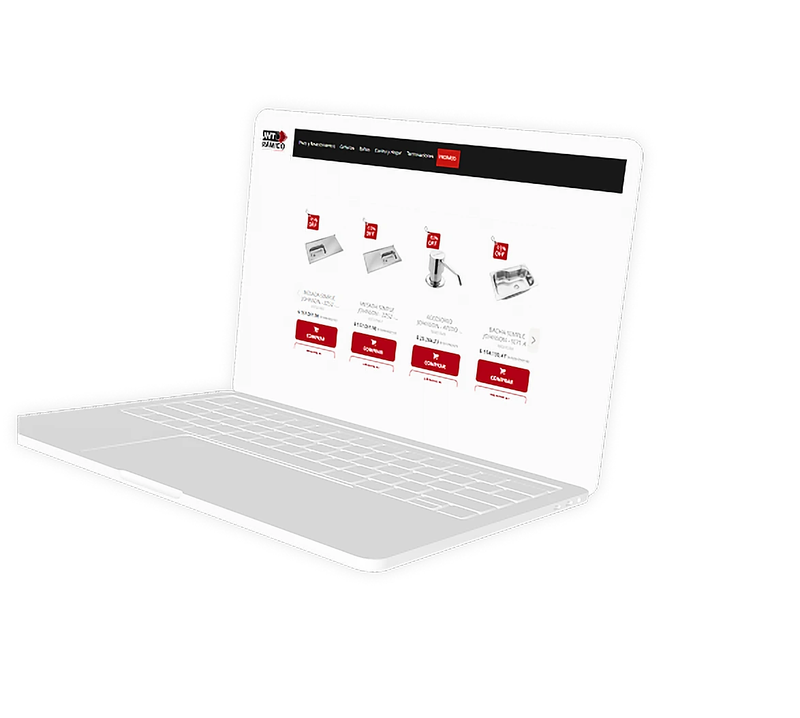
el rojo en etiquetas y en todos los botones de compra.Después
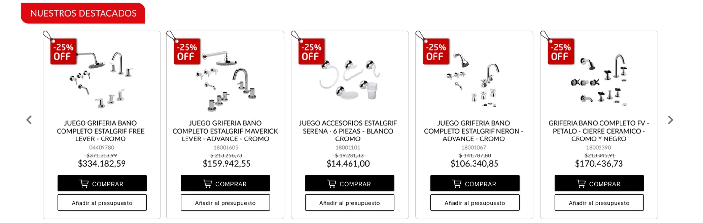
el negro como acento en "Comprar"; el rojo queda para los descuentos.
El rediseño en celular
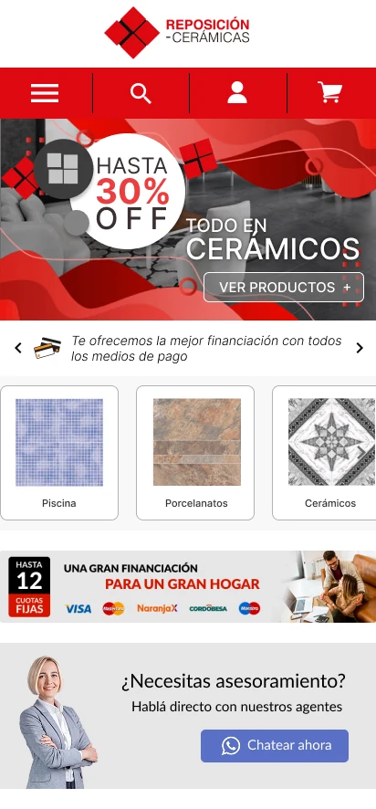
A futuro
Replantear el banner principal para que acompañe la experiencia y medir con mapas de calor dónde hay fricción en la home.
El sitio salió de implementación demasiado genérico. El packaging tenía identidad, pero la marca todavía no. El objetivo: que quien entre sienta que está en Cherry Season antes incluso de tener una identidad visual cerrada.
Color con sentido
Probé la regla 60-30-10 con distintas tonalidades: 60% blanco de base, 30% rosados y tierras que remiten al packaging y 10% de verde para los CTA. El verde encaja en la paleta y además habla del origen del café.
Como todos los cafés compartían el mismo envase, la primera imagen de cada miniatura muestra las notas del café y no el paquete. Los banners usan imágenes naturales que evocan ese momento de preparar café en casa.
Antes
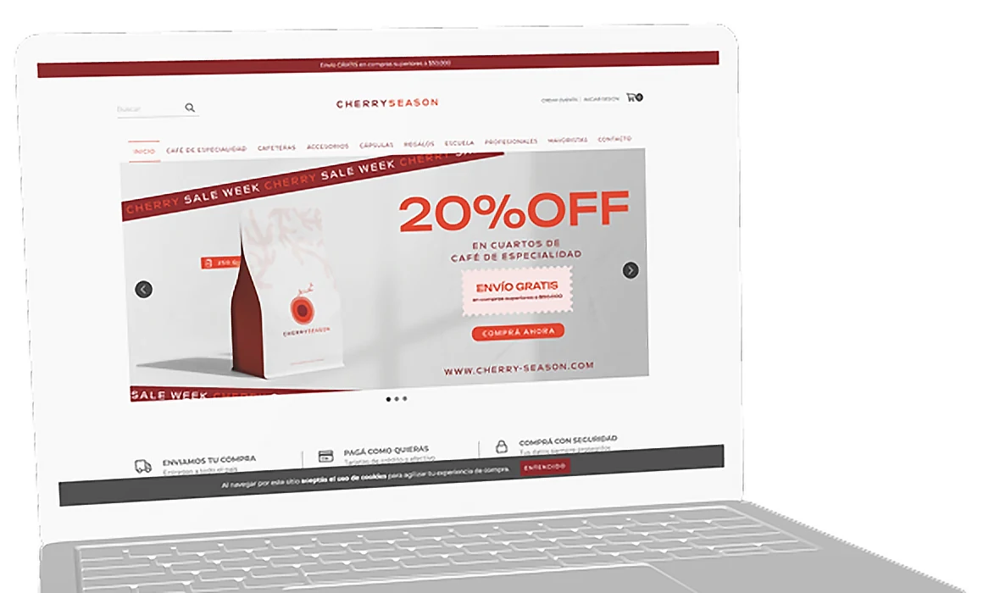
una home genérica, con un banner de descuento como protagonista.Después
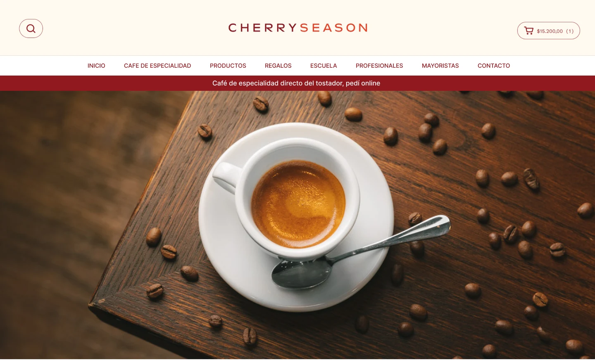
60% blanco, tonos tierra del packaging y una imagen natural del café.
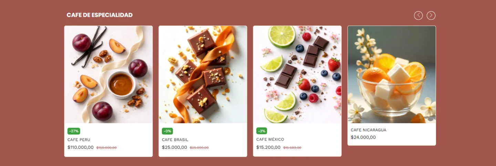
Miniaturas con las notas del café en lugar del mismo paquete repetido.
Ficha de producto: conversión y métricas
Después del rediseño, Marketing detectó fricción en la ficha. Elegir bien la molienda es clave: una elección incorrecta puede hacer que el café no sirva para el método de preparación del usuario. La interfaz no ayudaba a entender la diferencia.
La propuesta: una imagen por molienda que muestre para qué cafetera sirve, y una descripción con jerarquía que explique cada opción en lenguaje simple.
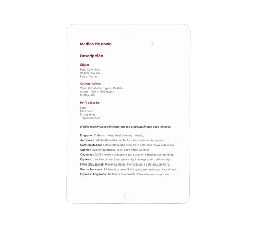
Descripción con jerarquía y cada molienda explicada.
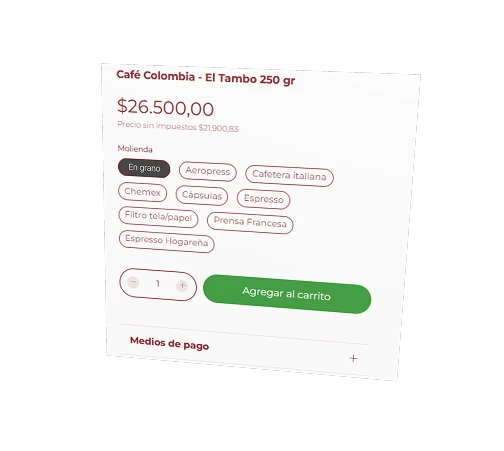
Selector de molienda.
A futuro
El sitio va a evolucionar con nuevas métricas y con la identidad visual definitiva.
Mafacha vende productos para la construcción y el hogar. Tenía los mismos productos, al mismo precio, en su sitio y en Mercado Libre, pero la gente confiaba más en Mercado Libre. Pidieron un e-commerce con identidad propia y la estrategia visual del marketplace.
Cómo lo resolví
Hice un benchmarking especializado en Mercado Libre para identificar sus buenas prácticas y reinventé el sitio con sus patrones más reconocibles: destacados por más vendidos, ofertas con cuenta regresiva, marcas con las que trabajan, categorías visuales y gift cards.
Antes
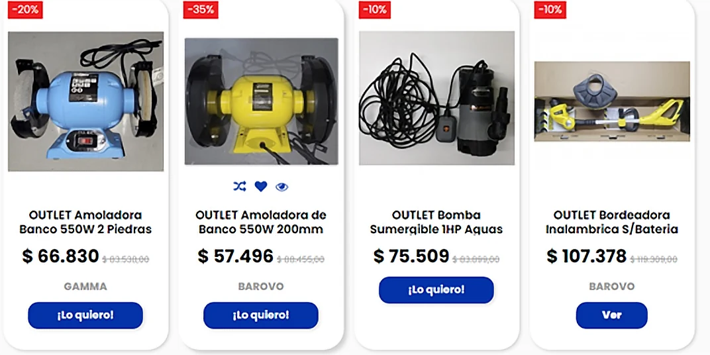
ofertas sin urgencia ni jerarquía entre precio y descuento.Después
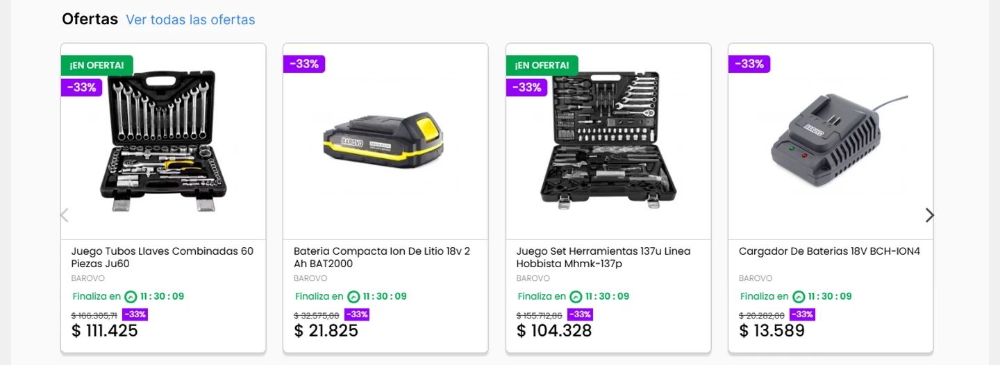
etiquetas de oferta, cuenta regresiva y el descuento junto al precio.
Antes
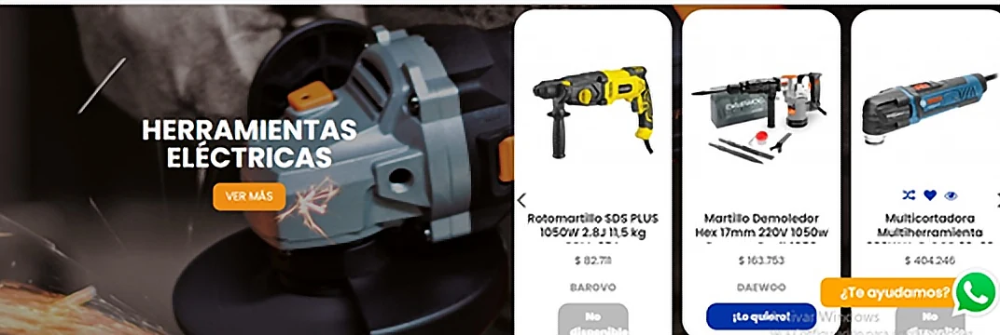
un banner que empuja las cards y las corta.Después
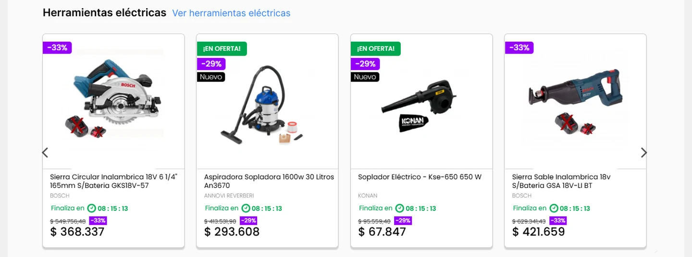
cada categoría como un carrusel propio, con acceso a "Ver todo".
El rediseño en celular
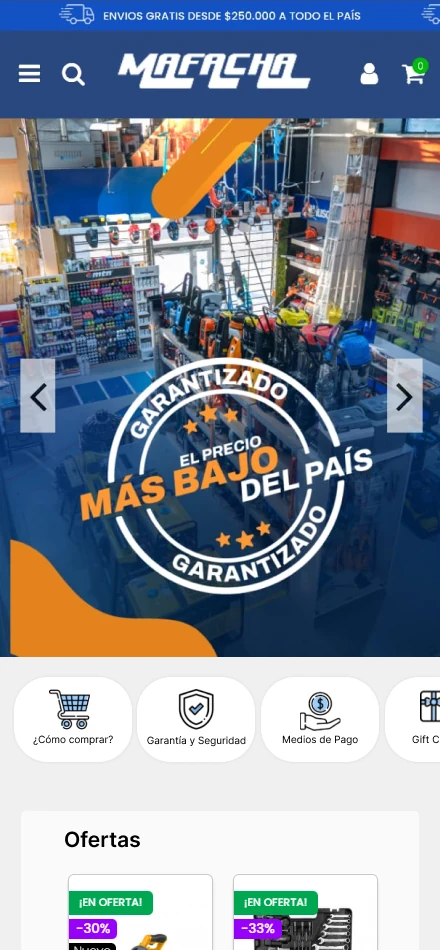
A futuro
Sumar métricas para detectar puntos de fricción y seguir iterando.
La Lomita tiene una identidad clara, en amarillo y verde, pero su sitio se sentía desordenado: la estructura no guiaba la mirada hacia lo importante y varios elementos competían entre sí. Audité la versión de escritorio y la mobile para ordenar, dar contraste y devolverle jerarquía.
Navegación
El encabezado tenía dos buscadores repetidos y una estructura desordenada.
Los ítems del menú usaban un grosor de letra excesivo, que dificultaba la lectura rápida y distraía de los puntos focales.
El submenú de categorías era demasiado extenso: propuse reordenarlo y achicar los títulos principales para recorrerlo con comodidad.
Antes
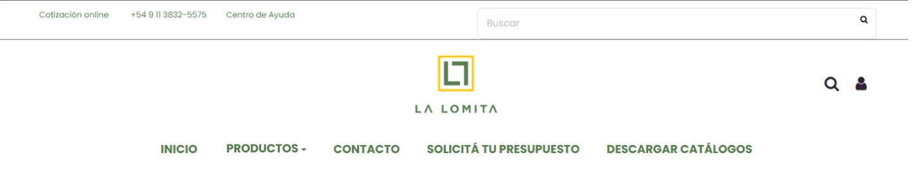
dos buscadores y un menú con letra muy gruesa.Después
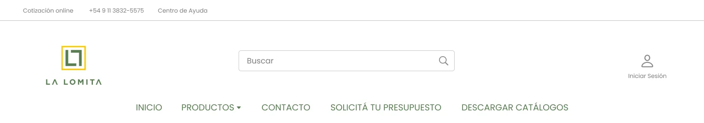
un solo buscador y un menú más liviano de leer.
Contraste y jerarquía
En las categorías destacadas, los textos no se distinguían del fondo: mejoré el sombreado para que se lean.
Las tres categorías grandes se veían idénticas a las chicas y repetían las del primer carrusel. Recomendé imágenes de productos aplicados, con color, que no se repitan.
El banner de instalación de aberturas de PVC no contrastaba con su texto: sumé un sombreado que lo resuelve.
Antes
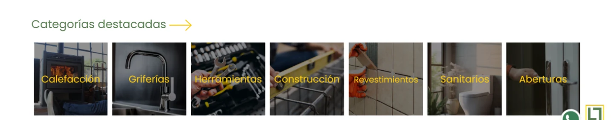
los nombres de las categorías se pierden sobre las fotos.Después
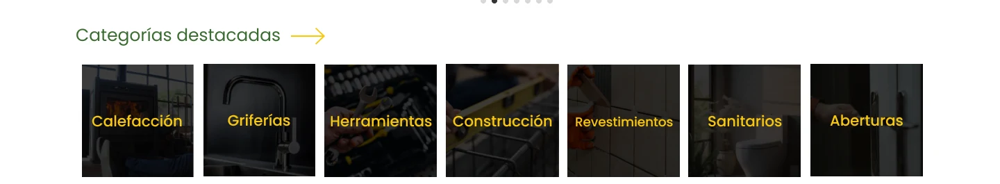
fondos más oscuros: cada categoría se lee de un vistazo.
Señales falsas y coherencia
Las tarjetas de beneficios parecían botones sin serlo. Quité sus márgenes para que no generen la falsa expectativa de poder presionarlas.
Los íconos de esas tarjetas tenían distintos grosores de línea: los unifiqué para dar coherencia visual.
Detalles que suman prolijidad: una marca desalineada en el carrusel y un ícono fuera de lugar en el footer.
No había hovers: agregué efectos a todos los botones para que el sitio responda a cada interacción.
Antes
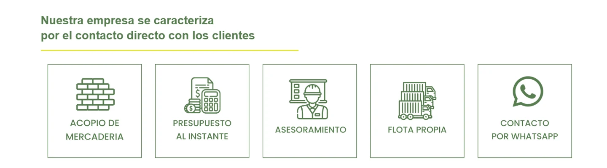
tarjetas con borde que parecen botones.Después
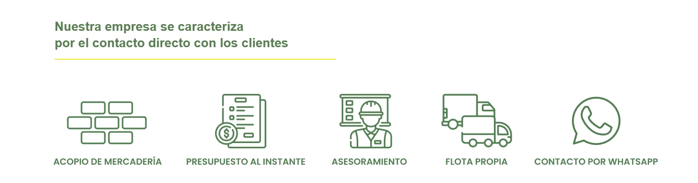
sin márgenes y con íconos de un mismo grosor de línea.
Un elemento que parece un botón y no lo es genera una falsa expectativa. El diseño tiene que prometer solo lo que cumple.
Mobile
Las mismas mejoras de contraste y diseño que en escritorio.
El buscador abría una barra con elementos desplazados, y el menú desplegable no coincidía con la identidad visual del resto.
En ambas versiones, las secciones estaban demasiado juntas: separarlas ayuda a entender la estructura de un vistazo.
Mobile
Antes
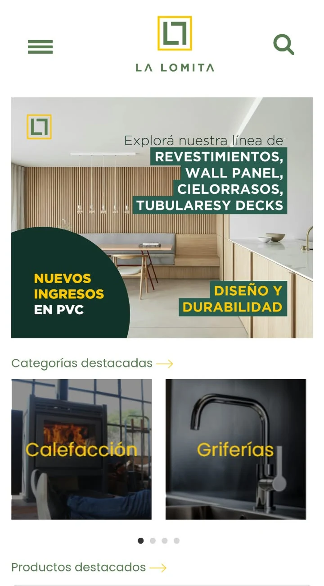
secciones pegadas y botones desparejos.Después
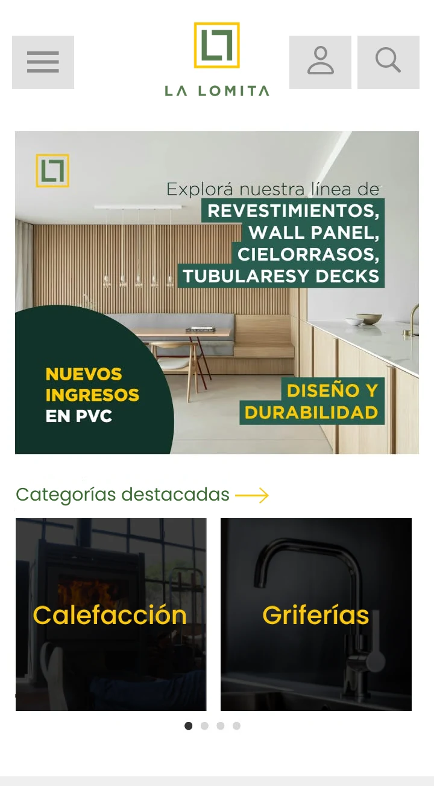
secciones separadas y la misma identidad que en escritorio.
Un Mundo es una tienda de electro y tecnología con identidad naranja y cian, que compite contra marcas grandes que ya "educaron" al usuario. Armé un informe donde cada hallazgo remite a un fundamento, así el cliente entiende no solo qué cambiar sino por qué. Lo que funcionaba bien quedó fuera del informe, para no recomendar cambios innecesarios.
Hallazgos de UX
El carrusel de categorías incluía elementos que no eran categorías, y eso confunde.
El botón "Añadir al carrito" era demasiado grande y distraía del resto de la información de la ficha.
"Nosotros" no debería estar en el menú principal: cuantas más opciones, más le cuesta decidir al usuario.
En mobile, el botón del ojo en las cards tenía poco margen para tocarlo con precisión.
El menú, las categorías y el buscador no tenían hover: el sitio no respondía a la interacción.
Antes
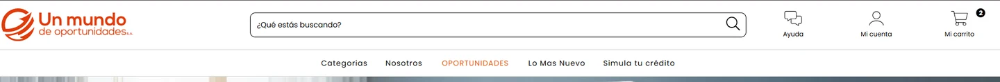
"Nosotros" en el menú principal y ninguna categoría a la vista.Después
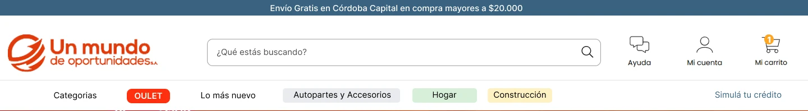
barra superior con envío gratis y accesos directos a categorías clave.
Antes
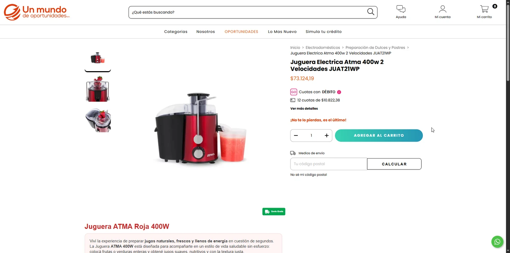
el botón de compra y el cálculo de envío compiten por la atención.Después
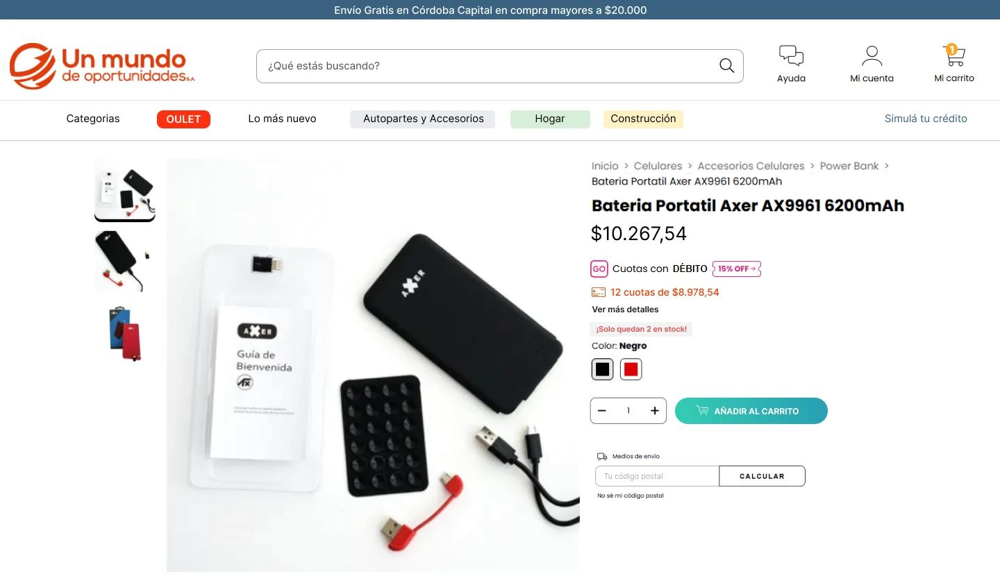
precio, cuotas y envío ordenados, con un botón de compra en su justa medida.
Hallazgos de UI
Las cards de producto no tenían jerarquía: faltaban etiquetas, financiación y colores distintos del naranja.
El precio estaba en naranja y las cuotas no se destacaban en ningún lugar, ni siquiera en la ficha.
Los íconos de categoría sobre fondos saturados perdían contraste entre figura y fondo.
Faltaba un juego entre negro y grises para jerarquizar, y colores saturados para resaltar lo importante.
Imágenes pixeladas e iconografía desactualizada bajan la calidad percibida frente a la competencia.
Antes
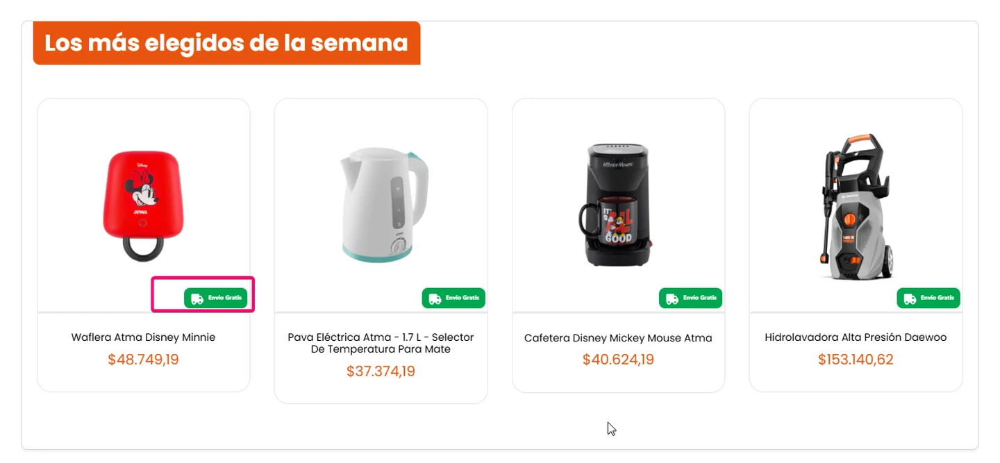
cards sin cuotas visibles y con el precio en naranja.Después
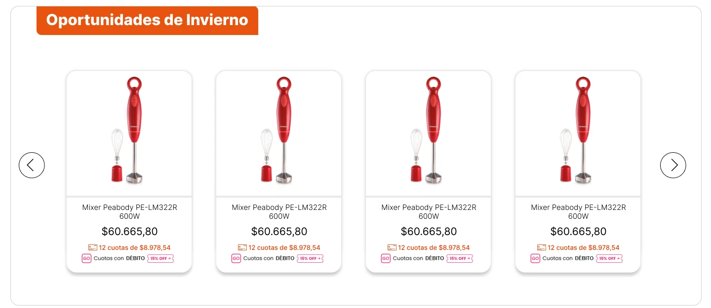
precio en negro, cuotas y descuento con débito visibles en cada card.
Que un dato esté disponible no es lo mismo que esté visible. Precio, cuotas y envío tienen que mostrarse de forma explícita.
Los fundamentos
Cada punto del informe se apoya en uno o más principios:
Ley de Jakob
Ley de Fitts
Ley de Hick
Figura y fondo (Gestalt)
Alineación (Gestalt)
Jerarquía visual
Codificación cromática
Reconocer antes que recordar
Legibilidad
Confianza y calidad percibida
Por ejemplo, la ley de Jakob: el usuario trae expectativas de otros sitios de su rubro. Alejarse demasiado de esa lógica no solo genera fricción; también desconfianza.
La decisión: no cambiar de plantilla
Evalué tres plantillas de Tiendanube (Amazonas, la actual; Ipanema y Brasilia) para un sitio que busca la lógica de Mercado Libre. Recomendé continuar con la plantilla actual: cambiarla no resolvía por sí sola la falta de jerarquía, implicaba costos y tiempos cerca de la fecha de entrega, y esos problemas se podían resolver con código. El cambio de plantilla queda como paso futuro, después de un rediseño.
Mobile
Antes
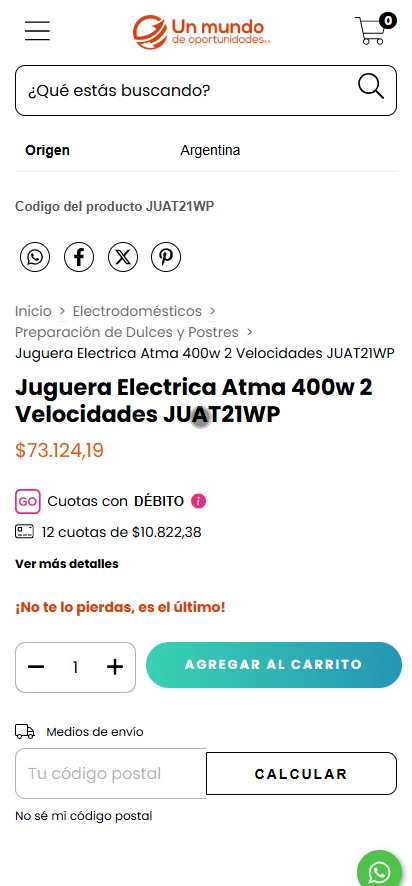
ficha de producto en el sitio anterior.Despuéshome nueva: banner, cuotas y categorías arriba de todo.
SuperGadget X100: creación de producto y diseño responsive basado en benchmarking
Creación de producto
Benchmarking
Prototipo de alta fidelidad
La idea
El producto se inspiró en Alexa y en la necesidad de proyectar imágenes. La pregunta fue simple: ¿por qué no tener todo en uno?
La función
Un asistente con inteligencia artificial que además proyecta imágenes en cualquier espacio, con rotación automática del proyector.
Cómo seleccioné a los competidores
Tenían que compartir características con el producto: ser tecnológicos, pertenecer al rubro robótica, tener un producto minimalista y único, y un precio poco accesible.
Qué detecté a nivel UI
Efectos parallax, minimalismo, contraste extremo entre letras muy grandes y muy chicas, imágenes enormes y de gran calidad, líneas finas, CTA claros, fondos negros, íconos con identidad y secciones que aprovechan toda la pantalla. Todo eso guió la landing.
IA integrada y proyección inteligente.Todas las aplicaciones en un solo dispositivo.
El lanzamiento
La landing cierra con una oferta especial de lanzamiento y un CTA directo a la compra.
En una partida de ajedrez hay piezas únicas, que no se repiten y sin las que el juego no existe. Branca es eso en la mesa: una pieza irremplazable. La reina lleva su corona y el águila de la marca, y alrededor, las botellas quedan como piezas de un mismo tablero.
Ilustración
Mapa ilustrado de los mundos Disney
Investigación
Corel Draw
Vectorización
Tocá un pin para ver la región de cerca
Investigación
Flora y fauna de cada región del mundo, sus ecosistemas y el origen de cada historia.
Cómo se hizo
En Corel Draw, a partir de recortes de imágenes y con vectorización de paisajes animados.